JUnit
Java Editor
Ctrl when applying a completion proposal toggles between the two insertion modes.
You can change the default in the Java > Editor > Content Assist preference page.
You can change the default in the =] Java > Editor > Content Assist preference page.
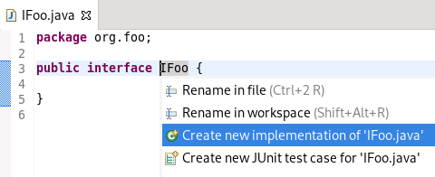
sealed, non-sealed, or final modifiers on permitted type declarations, as applicable, using the new Quick Fixes (Ctrl+1).
On a permitted class declaration:
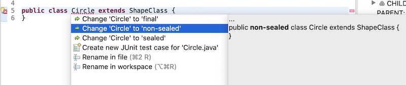
On a permitted interface declaration:
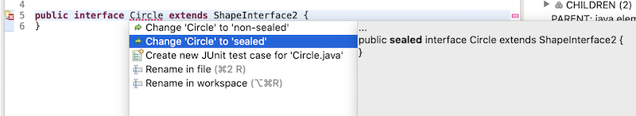
Switch statements that use control statements such as nested switch statements, if/else blocks, for/while loops are not considered as is the case for return/continue statements. All cases of the switch statement must either have a last assignment statement that sets the same variable/field as other cases, or else has a throw statement. Fall-through is allowed between cases but only if there are no other statements in between. The switch statement must have a default case unless the switch expression is an enum type and all possible enum values are represented in the cases.
To apply the quick assist, press Ctrl+1 on the target switch statement and select Convert to switch expression, if offered.
To apply the clean up, invoke Source > Clean Up..., use a custom profile, and on the Configure... dialog, select Convert to switch expression check box on the Code Style tab.
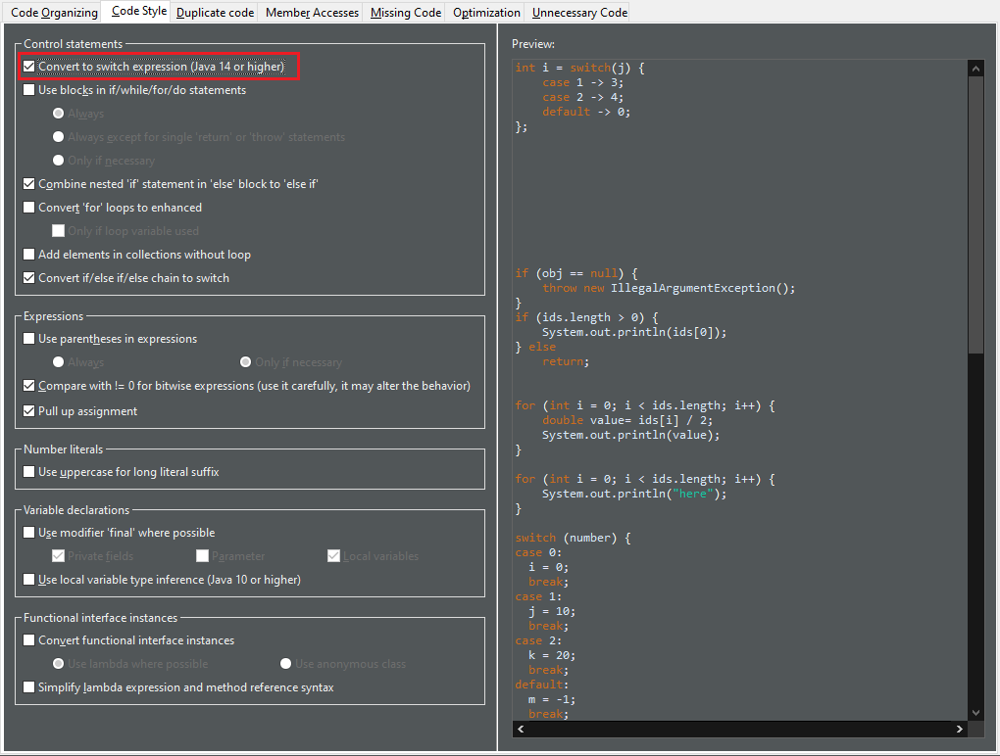
For the given code:
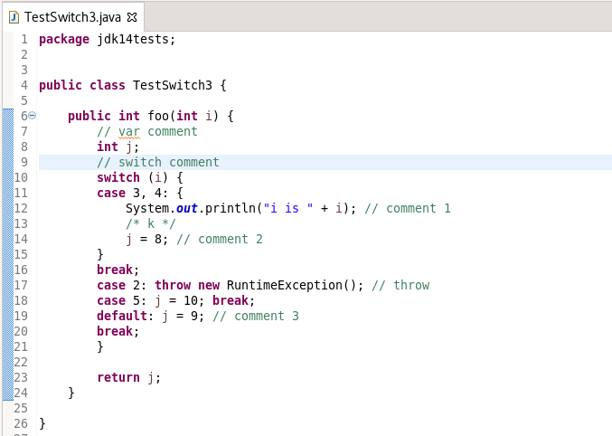
One gets:
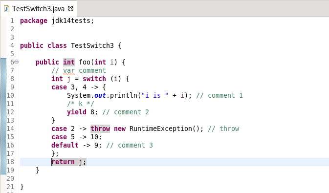
if statement in else block to else if.
Beware for any comments after the else keyword. It will be lost.
To apply the clean up, invoke Source > Clean Up..., use a custom profile, and on the Configure... dialog, select Combine nested 'if' statement in 'else' block to 'else if' check box on the Code Style tab.
For the given code:
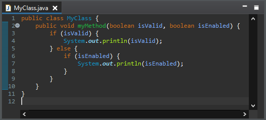
One gets:
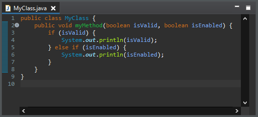
> operator with != when the comparison
expression has a bitwise expression operand and a 0 operand.
This resolves an anti-pattern for such kind of comparisons, which can also be a bug when the bitwise expression is involving a negative constant value. This code smell is further described by the FindBugs project as bug description "BIT: Check for sign of bitwise operation".
To apply the clean up, invoke Source > Clean Up..., use a custom profile, and on the Configure... dialog select Compare with != 0 for bitwise expression on the Code Style tab.
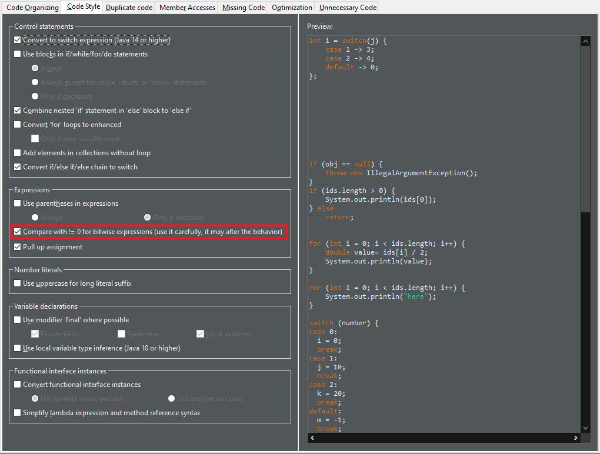
| For the given code: | You get this after the clean up: |
| 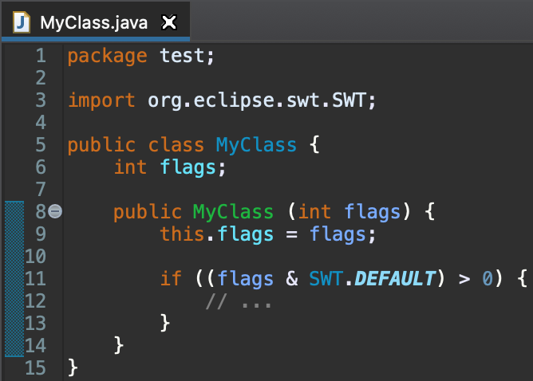 | 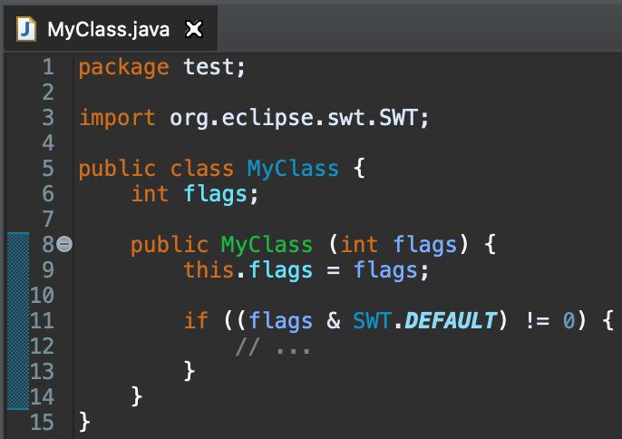 |
if condition above the if node.
It improves the readability of the code.
To apply the clean up, invoke Source > Clean Up..., use a custom profile, and on the Configure... dialog, select Pull up assignment check box on the Code Style tab.
For the given code:
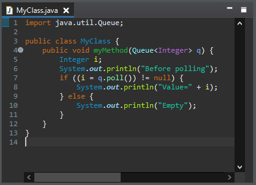
One gets:
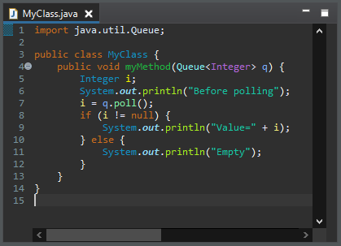
if/else if/else blocks to use switch when possible.
It converts to switch when there are more than two cases.
It does not convert if the discriminant can be null, that is to say only primitive.
It does a variable conflict analyze.
The case value can be literals or constants.
To apply the clean up, invoke Source > Clean Up..., use a custom profile, and on the Configure... dialog, select Convert if/else if/else chain to switch check box on the Code Style tab.
For the given code:
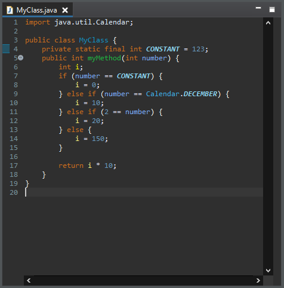
One gets:
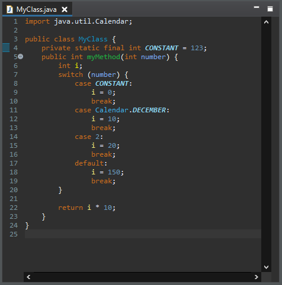
Collection.addAll() or Collections.addAll() instead of a for loop.
It refactors for loops with index, for loops with iterator and foreach loops.
If the source is an array, the list is raw, and the Java version is 1.5 or higher, we use Arrays.asList() to handle the erasure type. It doesn't decrease the performance.
To apply the clean up, invoke Source > Clean Up..., use a custom profile, and on the Configure... dialog, select Add elements in collections without loop check box on the Code Style tab.
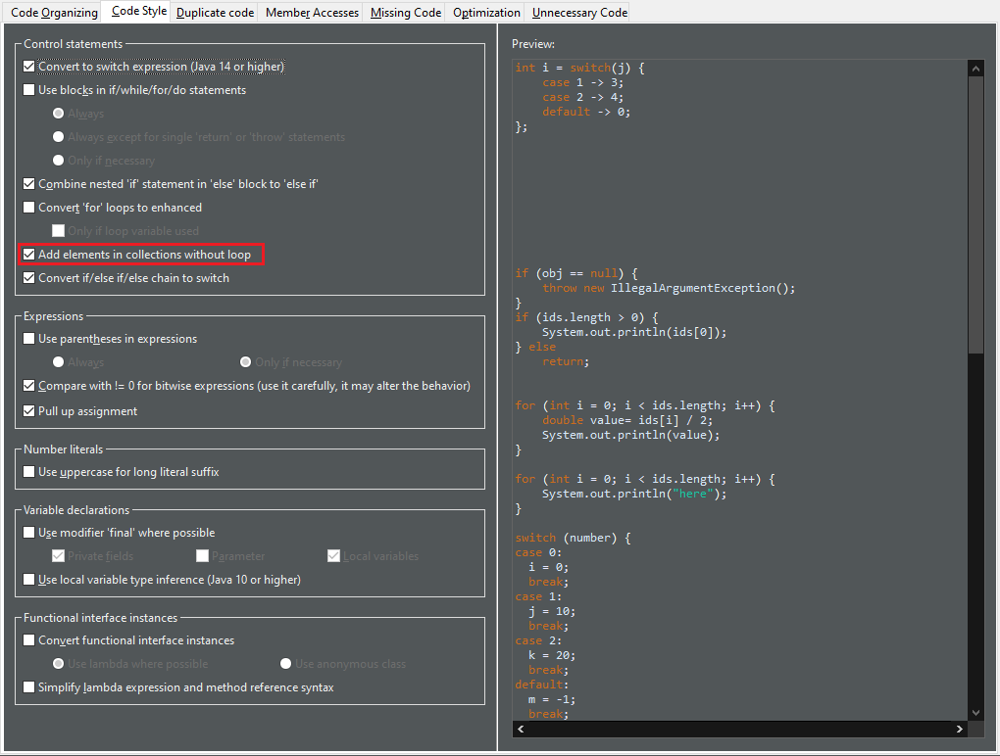
For the given code:
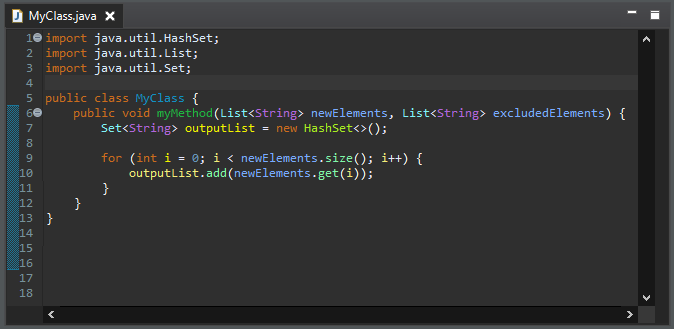
One gets:
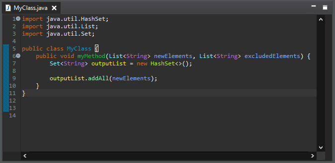
(X && Y) || (!X && Z) by X ? Y : Z.
The operands must be passive and boolean.
To apply the clean up, invoke Source > Clean Up..., use a custom profile, and on the Configure... dialog, select Replace (X && Y) || (!X && Z) by X ? Y : Z check box on the Duplicate Code tab.
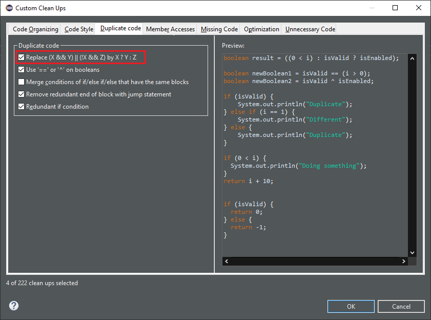
For the given code:

One gets:
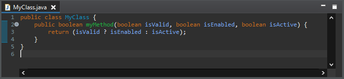
(X && !Y) || (!X && Y) by X ^ Y and replaces (X && Y) || (!X && !Y) by X == Y.
It only works on boolean.
It works with lazy or eager operators.
The operands must be passive.
It does not matter an operand is on the left or right.
It does a deep negation expression analyze.
To apply the clean up, invoke Source > Clean Up..., use a custom profile, and on the Configure... dialog, select Use '==' or '^' on booleans check box on the Duplicate Code tab.
For the given code:

One gets:
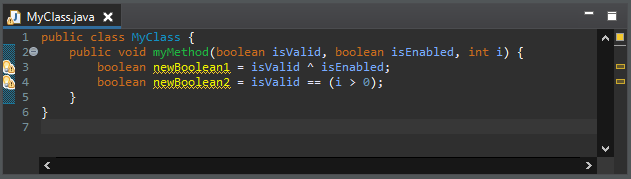
return, break, continue or throw), and has the same list of statements below that.
It detects similar statements. It also checks that the declarations of the variables in the statements are the same. It looks for redundant statements in if, else, catch and finally but not in loops.
To apply the clean up, invoke Source > Clean Up..., use a custom profile, and on the Configure... dialog, select Remove redundant end of block with jump statement check box on the Duplicate Code tab.
For the given code:
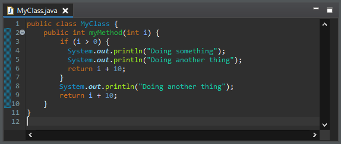
One gets:

else that is negative to the condition of the previous if.
The condition must be passive. The removed code should not throw an expected exception. The cleanup uses a deep condition comparison algorithm.
To apply the clean up, invoke Source > Clean Up..., use a custom profile, and on the Configure... dialog, select Redundant if condition check box on the Duplicate Code tab.
For the given code:
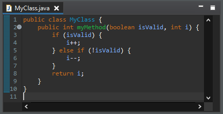
One gets:
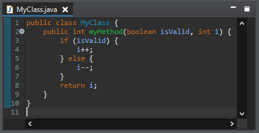
hashCode() method by Eclipse-autogenerated hashCode() method for Java 7 using Objects.hash().
Let's remind that you can autogenerate your hashCode() and equals() methods by right-clicking on your class, selecting Source and clicking on Generate hashCode() and equals() methods....
Since Eclipse 2018-09, a checkbox allows you to generate your methods using Java 7 API. This cleanup rewrites your method as if it has been generated using this option.
This clean up does not generate again your method from scratch, it rewrites it using a more modern syntax. That is to say, if your method is missing or voluntary does not process a field, this field still won't be processed.
To apply the clean up, invoke Source > Clean Up..., use a custom profile, and on the Configure... dialog, select Use Objects.hash() check box on the Unnecessary Code tab.
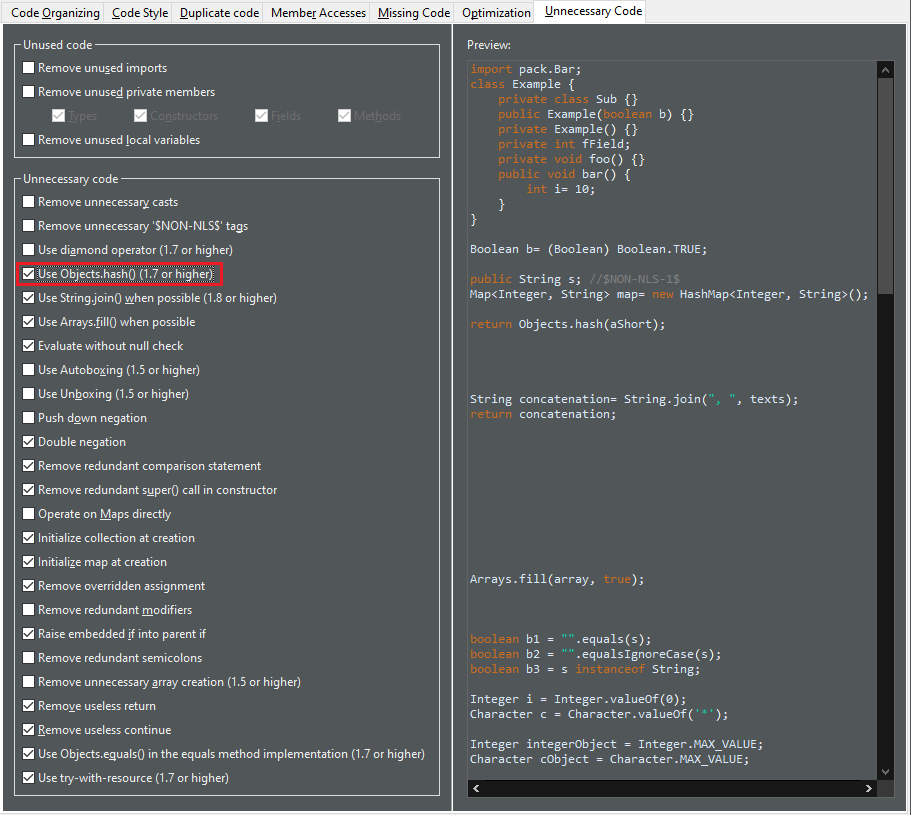
For the given code:
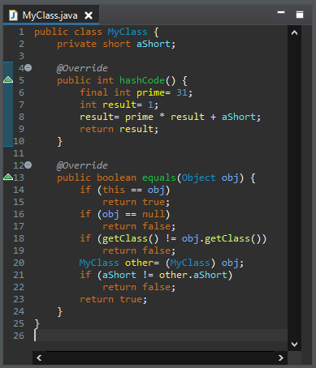
One gets:
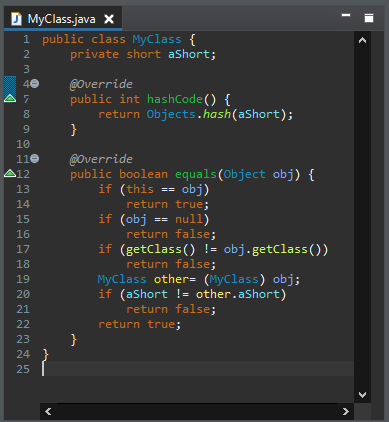
String.join() when possible.
It detects all types of for loops. The delimiter can be added before or after. The condition can be a boolean or an index comparison.
To apply the clean up, invoke Source > Clean Up..., use a custom profile, and on the Configure... dialog, select Use String.join() check box on the Unnecessary Code tab.
For the given code:
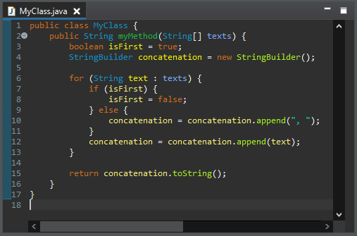
One gets:
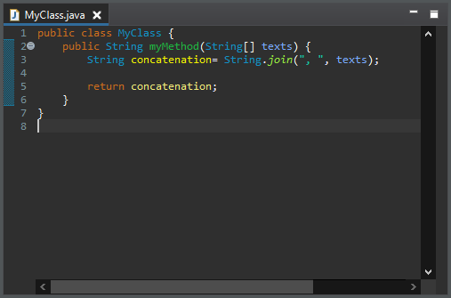
Arrays.fill() where possible.
The value must be hard-coded.
To apply the clean up, invoke Source > Clean Up..., use a custom profile, and on the Configure... dialog, select Use Arrays.fill() check box on the Unnecessary Code tab.
For the given code:
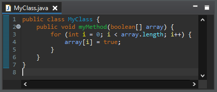
One gets:
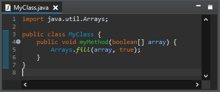
It removes null check on value before equals() or equalsIgnoreCase() method and before instanceof expression.
It only removes redundant passive expressions.
To apply the clean up, invoke Source > Clean Up..., use a custom profile, and on the Configure... dialog, select Evaluate without null check check box on the Unnecessary Code tab.
For the given code:
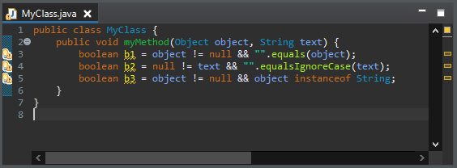
One gets:
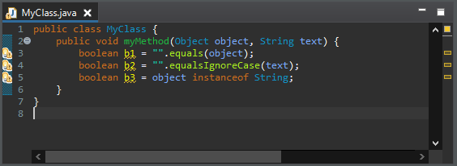
boolean expression.
It removes negations on both operands in an equality/difference operation.
It prefers equality/difference operation rather than negated operand.
To apply the clean up, invoke Source > Clean Up..., use a custom profile, and on the Configure... dialog, select Double negation check box on the Unnecessary Code tab.
For the given code:
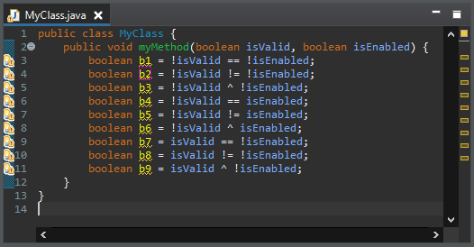
One gets:
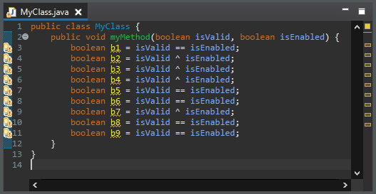
return statements. Such useless bad value checks are comparing an expression against bad value, then either assigning bad value or the expression depending on the result of the bad value check. It is simpler to directly assign the expression.
The expression should be passive.
The excluded value should be hard coded.
To apply the clean up, invoke Source > Clean Up..., use a custom profile, and on the Configure... dialog, select Remove redundant comparison statement check box on the Unnecessary Code tab.
For the given code:
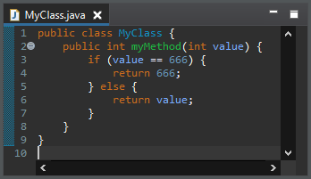
One gets:
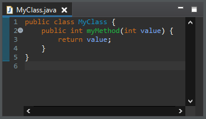
super constructor with empty arguments.
Such a call is redundant. See JLS section 12.5 for more info.
To apply the clean up, invoke Source > Clean Up..., use a custom profile, and on the Configure... dialog, select Remove redundant super() call in constructor check box on the Unnecessary Code tab.
For the given code:
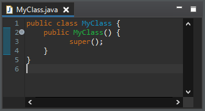
One gets:
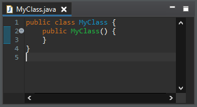
Collection, then invoking Collection.addAll() on it, by the creation of the new Collection with the other Collection as parameter.
Only well known collection classes are refactored to avoid behavior changes. The cleanup is enabled only if there is no useful instantiation parameters.
To apply the clean up, invoke Source > Clean Up..., use a custom profile, and on the Configure... dialog, select Initialize collection at creation check box on the Unnecessary Code tab.
For the given code:
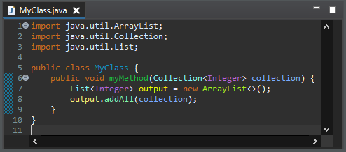
One gets:
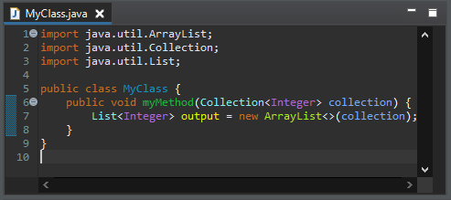
Map, then invoking Map.putAll() on it, by creating the new Map with the other Map as parameter.
Only well known map classes are refactored to avoid behavior changes. The cleanup is enabled only if there is no useful instantiation parameters.
To apply the clean up, invoke Source > Clean Up..., use a custom profile, and on the Configure... dialog, select Initialize map at creation check box on the Unnecessary Code tab.
For the given code:
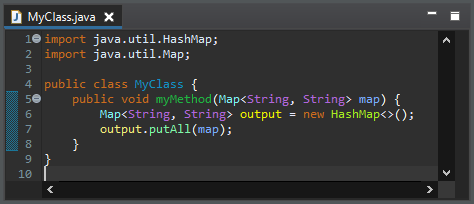
One gets:
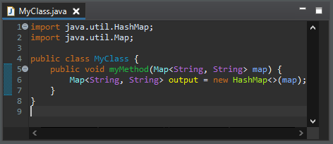
To apply the clean up, invoke Source > Clean Up..., use a custom profile, and on the Configure... dialog, select Remove overridden assignment check box on the Unnecessary Code tab.
For the given code:
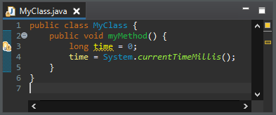
One gets:
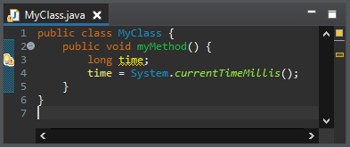
if statement into the parent if statement.
The cleanup checks that there is no else statement.
To apply the clean up, invoke Source > Clean Up..., use a custom profile, and on the Configure... dialog, select Raise embedded if into parent if check box on the Unnecessary Code tab.
For the given code:
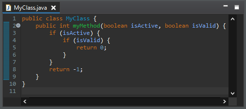
One gets:
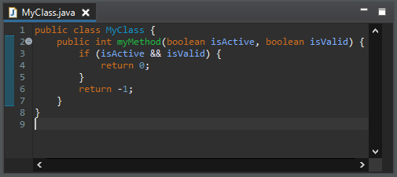
return at the end of a method or lambda.
The cleanup checks that there is no value on the return statement.
To apply the clean up, invoke Source > Clean Up..., use a custom profile, and on the Configure... dialog, select Remove useless return check box on the Unnecessary Code tab.
For the given code:
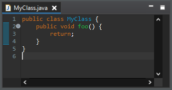
One gets:
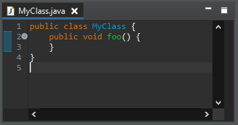
continue at the end of a loop.
A continue statement at the end of a loop is removed.
A continue statement at the end of a control statement is removed if the control statement is at the end of a loop.
A continue statement is kept if it has a label.
To apply the clean up, invoke Source > Clean Up..., use a custom profile, and on the Configure... dialog, select Remove useless continue check box on the Unnecessary Code tab.
For the given code:
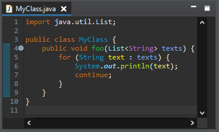
One gets:
finally clauses.
It may move an inner closeable assignment as a resource. It handles finally with a simple close() invocation, a null-check and remaining statements below.
It is only enabled from Java 7 and it also handles the Java 9 syntax.
To apply the clean up, invoke Source > Clean Up..., use a custom profile, and on the Configure... dialog, select Use try-with-resource check box on the Unnecessary Code tab.
For the given code:
One gets:
break to avoid passive for loop iterations.
The inner assignments must not do other different assignments after (assign other values or assign into other variables).
There must be no side effects after the first assignments.
To apply the clean up, invoke Source > Clean Up..., use a custom profile, and on the Configure... dialog, select Exit loop earlier check box on the Optimization tab.
For the given code:
One gets:

String concatenation by StringBuilder when possible.
It uses StringBuffer for Java 1.4-.
It only replaces strings on several statements and the concatenation should have more than two pieces.
The variable should be only concatenated and it should retrieve the string once.
To apply the clean up, invoke Source > Clean Up..., use a custom profile, and on the Configure... dialog, select Replace String concatenation by StringBuilder check box on the Optimization tab.
For the given code:
One gets:
toString() method.
It works for all the primitive types: boolean, char, byte, short, int, long, float and double.
To apply the clean up, invoke Source > Clean Up..., use a custom profile, and on the Configure... dialog, select Primitive serialization check box on the Optimization tab.
For the given code:
One gets:
Boolean.TRUE/Boolean.FALSE by true/false when used as primitive.
To apply the clean up, invoke Source > Clean Up..., use a custom profile, and on the Configure... dialog, select Prefer boolean literals check box on the Optimization tab.
For the given code:
One gets:
Java Views and Dialogs
If you want to see the order in which the libraries are added to the classpath, e.g. to understand classpath loading issues, you can disable the preference.
Java Formatter
Just like with standard wrapping settings, they can be set to keep everything in a single line (Do not wrap), each annotation in a separate line (Wrap all elements), or only break lines that exceed the width limit (Wrap where necessary). The last option along with the Never join already wrapped lines setting effectively means manual control over each case. The annotation wrapping settings differ from other wrapping settings in that the indentation control is not available.
The formatter configuration sections can be found in the Profile Editor (Preferences > Java > Code Style > Formatter > Edit...).
Debug
com.sun.jdi.ObjectCollectedException occurred while retrieving value).